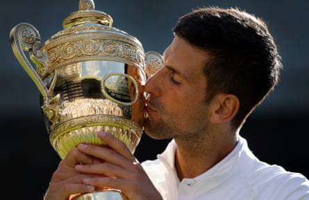
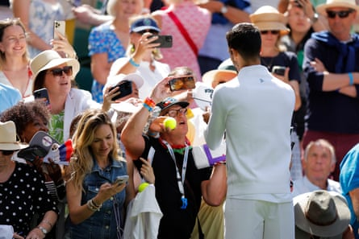
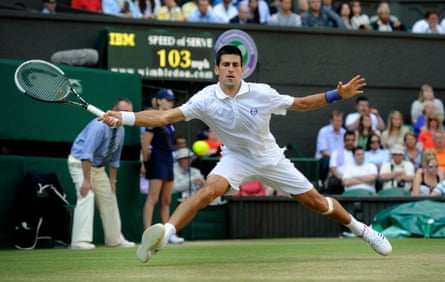

M oments after he had beaten Dan Evans in almost perfunctory style on Centre Court to advance to the third round of the championships for a record 19th time, Novak Djokovic bumped into an old friend in the corridor on the way to his own match.
“Good day at the office?” Gaël Monfils inquired, smiling as old pros do. The French veteran paused before heading for Court 18 and a much smaller audience, adding: “At this age, we need these types of days.”
Djokovic smiled back. They talk the same language, walk the same walk, if in different directions with different ambitions. Both are 38 and still dangerous in any draw. “Of course, it’s great,” the seven-time champion said after beating Evans with a near-faultless display. “You want to keep on playing this way.”
In his pomp, we would be asking him – usually as world No 1 – who he saw as the main threats left in the tournament after two rounds. Now, even with an astonishing 19 of the 32 seeds already shredded in the first week, we tiptoe around the subject. The narrative, for better or worse, has switched to: how much longer can he go on at this level?
Djokovic knows what we want to know. And he usually gets in first, as he did on Centre Court after his second solid win, playing outrageously to the gallery. “Thanks for coming,” he said, pausing for the laughter. Maybe, he told the fans, he’d soon be looking forward to drinking a margarita or two on a beach somewhere with his old retired chums, Roger Federer and Rafael Nadal. More giggles.
This is a side to the Djokovic persona he has developed artfully over the years, performative if a bit arch. Later, he would admit: “I don’t know why I said margaritas because I never had a margarita in my life … but I guess it sounds good.”
For all that his tennis can seem brilliantly mechanical and his words can sound scripted, he is a genuinely emotional man. He loves what he does, and he wants to be loved. That daft joke for Centre Court connected him with a power base, the paying customers who have come to be entertained, to ooh and to aah. Yet, the cheering hasn’t always been unreserved. There were other heroes – such as the two with whom Djokovic might one day actually share a margarita or three. After losing a dramatic US Open final in 2021 against Daniil Medvedev, the rare and raucous support Djokovic got from the tough New York crowd moved him to tears on one of the late changeovers. I’ve never seen another player cry like that during a match. “I did not expect it,” he admitted. “The amount of support and energy and love I got from the crowd was something I’ll remember for ever.”
Applause is one of the driving forces that brings him back to the stage when his body might be shouting: “Go to the beach!” Last year, he reached the final against Carlos Alcaraz only weeks after having knee surgery, which might not have been what the doctor ordered. But the show must go on.
Although he is fit, physically and mentally, these remain uncertain times for the old trouper, and he must always trust the other Djokovic: the on-court killer. Those instincts will never leave him. He is merciless on court.
Andy Roddick, with whom he nearly had a locker-room punch-up many years ago, holds Djokovic in the highest esteem. The quotable American famously remarked once: “First he takes away your legs. Then he takes your soul.”
Djokovic, the sixth seed this year, agrees with the first bit, not so much the second. It doesn’t fit the nice-guy image for which he strives. But any witness would agree it’s without doubt true. Opponents melt in front of him, as Alexandre Müller did in round one , after briefly harbouring thoughts of an upset, and Evans folded spectacularly after a competitive start.
Novak Djokovic kisses the trophy after his triumph in 2022.Photograph: Tom Jenkins/The Guardian
Craig O’Shannessy, the Australian strategist who worked with him for a while, told me once Djokovic always needs convincing that changing his tactics or mindset is the right way. I think Andy Murray probably came up against this trademark stubbornness in their brief and not altogether successful partnership. Djokovic is very much his own man.
Since the first time I saw him win here, in 2011, he has carried himself with the air of a born champion. He always knew he could be the best and could be better than last time if his form ever dipped. He has more gears than anyone in tennis. The only difference is, he takes longer now to find them.
“It can be only one day,” he says. “One match. Tomorrow or in two days can be a different story.” He will not let his guard down.
Unlike for the majority of his career, he finds himself outside the top five in the world (although it does not concern him, because he plays far fewer tournaments), but those who have watched him from the closest vantage point, fear him still.
Nadal’s uncle and longtime coach, Toni, writing in El País recently, put the Serb just behind Alcaraz and Jannik Sinner as contenders for this title. Getting there would lift Djokovic to 25 majors and so far clear of the field as to make that target an unreachable dream for the next generation.
And now he is encouraged, by his form, his fitness, his hunger. Djokovic is dangerous again.
Novak Djokovic signs autographs after his second-round win against Dan Evans.Photograph: Tom Jenkins/The Guardian
His quick win over 35-year-old Evans, who could pickpocket only five games off him in an hour and 47 minutes, was a fine workout, no more. There will be tougher tests ahead. Sinner is on his side of the draw.
And all the while, Djokovic must keep his game face on, for his own self-belief and to encourage the perception among critics, friends and strangers that he can be as good as he once was.
Brendan Ingle was a boxing trainer who understood that all fighters, all athletes are, by trade if not inclination, performers. Some are less suited to it than others. So he would take shy kids from the streets of Sheffield to nearby prisons, to be cheered or jeered by the audience, as they sang, recited poetry or sparred with their hands behind their backs.
They knew hardship and reality, but they were scared stiff under the glare of the ring lights – until it all became a pantomime, a show, as they discovered emotional depths they barely knew they had. Singing and dancing, hitting and ducking, they delivered the magic ingredient Ingle knew would unlock their potential: a performance.
Djokovic is a lot like those kids. His reality in childhood was growing up under bombs falling on Belgrade. He might not have been shy or socially deprived, like Ingle’s Wincobank scruffs, but he still had to learn how to perform in front of audiences who demand a lot more than a song or two. They want sweat, tears, drama, victories.
Novak Djokovic against Marcos Baghdatis in 2011, the year he won Wimbledon for the first time.Photograph: Tom Jenkins/The Guardian
For as long as I’ve been watching him, he has played almost exclusively on the main stage of every tournament, none bigger than Centre Court at Wimbledon , where he first appeared 20 years ago, and where he has won seven of his 24 majors.
On Saturday, it’s Act I, Scene III, opposite the world No 49, Miomir Kecmanovic, in a Serbian two-hander before the bigger drama to come in Act II.
Kecmanovic, trained by Djokovic’s old travelling companion on the circuit, Viktor Troicki, has won eight of his 13 matches in six visits to Wimbledon. It is unlikely he will add to that number on Saturday. And no doubt, in his on-court victory speech, Djokovic will pay his compatriot the usual compliments. He might even conjure up another bad joke or two.
Novak is an actor; he will be whatever you want him to be. And, when he goes back to the locker room, when he has his own private conversation, he will convince himself that’s he still got it, that he’s still a champion.